Microsoft Entra Hybrid Identity Integration
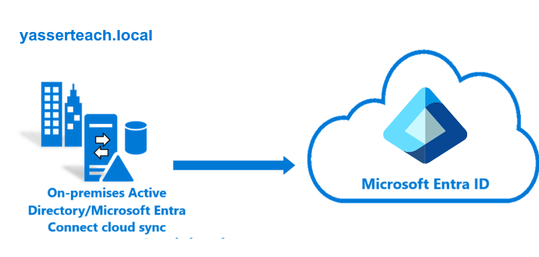
| Project Category | Cloud Security / Identity & Access Management (IAM) |
|---|---|
| Platform | Microsoft Entra ID |
| Core Technologies | Microsoft Entra Connect Sync, Active Directory Domain Services, Password Hash Synchronization, Windows Server 2022 |
| Project Focus | Hybrid identity synchronization between on-premises Active Directory and Microsoft Entra ID |
Project Overview
This project implemented a complete Hybrid Identity integration between an on-premises Microsoft Active Directory environment and Microsoft Entra ID using Microsoft Entra Connect Sync. The project focused specifically on hybrid identity synchronization rather than repeating the deployment of Active Directory Domain Services — the existing Active Directory infrastructure was treated as a prerequisite.
1. Business Scenario
Organizations running on-premises Active Directory need a controlled path into Microsoft Entra ID and Microsoft 365 without giving up their existing identity investment. This lab builds that path end-to-end: a single OU boundary is extended into the cloud through Microsoft Entra Connect Sync, authenticated with Password Hash Synchronization, and validated with a live Delta Sync — while the synchronization scope, sign-in method, and tenant-sensitive details stay tightly controlled.
2. Project Objectives
2.1 Establish Hybrid Identity Integration
Integrate the existing on-premises Active Directory domain yasserteach.local with Microsoft Entra ID using Microsoft Entra Connect Sync, creating a hybrid identity model where identity objects are primarily managed on-premises and synchronized to the cloud.
2.2 Configure Cloud-Compatible User Principal Names
Because .local is a non-routable internal namespace, an alternative cloud-compatible UPN suffix was configured for synchronized identities. For security and portfolio purposes, the actual cloud tenant domain is not disclosed — e.g. ahmed@<cloud-domain> instead of ahmed@yasserteach.local.
2.3 Implement Password Hash Synchronization
Microsoft Entra Connect was configured to use Password Hash Synchronization (PHS), allowing synchronized users to authenticate to Microsoft Entra ID with their on-premises credentials. Pass-through Authentication, AD FS Federation, PingFederate, and Seamless SSO were intentionally excluded to keep the project focused on a straightforward, commonly used hybrid authentication architecture.
2.4 Implement OU-Based Synchronization Filtering
Instead of synchronizing the entire Active Directory forest, synchronization was restricted to specific Organizational Units — demonstrating controlled identity provisioning and reducing unnecessary synchronization of unrelated AD objects.
2.5 Synchronize Users and Security Groups
The project validated synchronization of Active Directory users, Global Security Groups, group memberships, and basic user attributes from on-premises to Microsoft Entra ID.
2.6 Validate Ongoing Delta Synchronization
After the initial synchronization, an existing user was modified in Active Directory and a manual Delta Sync was initiated to verify that subsequent identity changes propagate successfully to Microsoft Entra ID.
3. Lab Environment
| Component | Configuration |
|---|---|
| Project Name | Microsoft Entra Hybrid Identity Integration |
| Domain Controller | DC01 |
| Operating System | Windows Server 2022 |
| Active Directory Domain | yasserteach.local |
| Identity Platform | Microsoft Entra ID |
| Synchronization Platform | Microsoft Entra Connect Sync |
| Authentication Method | Password Hash Synchronization |
| Synchronization Scope | Selected OUs (YasserTeach → Users, Groups) |
| Virtualization Platform | VMware Workstation |
| Cloud Domain | Redacted |
| Tenant Information | Redacted |
4. Resources Created
| Resource Type | Resource Name |
|---|---|
| Domain Controller | DC01 (Windows Server 2022) |
| Active Directory Domain | yasserteach.local |
| Organizational Unit | YasserTeach (Users, Groups) |
| User Account | Ahmed Saleh |
| User Account | Sara Hassan |
| User Account | Omar Khalid |
| Security Group | Cloud-Admin (Global, Security) |
| Security Group | Cloud-Users (Global, Security) |
| Synchronization Engine | Microsoft Entra Connect Sync |
5. Project Architecture
The diagram below summarizes the complete Hybrid Identity solution: identities are managed on-premises in Active Directory, synchronized through Microsoft Entra Connect Sync using Password Hash Synchronization and OU Filtering, and represented as cloud users and security groups in Microsoft Entra ID.
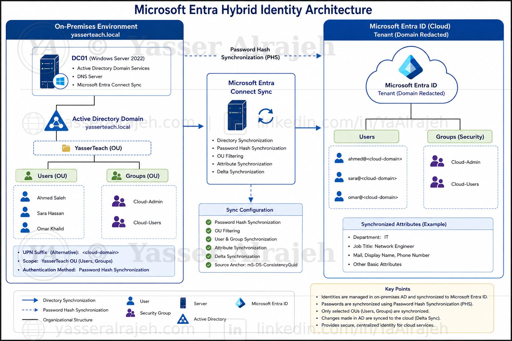
Figure 1: End-to-end Microsoft Entra Hybrid Identity architecture — on-premises Active Directory, Microsoft Entra Connect Sync, and Microsoft Entra ID.
6. Technologies Used
- Microsoft Entra ID
- Microsoft Entra Connect Sync
- Active Directory Domain Services (AD DS)
- Windows Server 2022
- DNS
- VMware Workstation
- Windows PowerShell
7. Security Features Implemented
- OU Filtering — only project-specific users and groups were synchronized, not the entire forest.
- Password Hash Synchronization — a simple and effective Hybrid Identity authentication method.
- Dedicated synchronization scope — no unrelated Active Directory objects were included.
- Stable Source Anchor (mS-DS-ConsistencyGuid) providing consistent identity mapping between environments.
- Export Deletion Threshold retained at its default of 500 objects for accidental-deletion protection.
- Delta Synchronization validation — confirmed ongoing identity changes propagate correctly, not just initial provisioning.
- Sensitive data protection — Tenant ID, tenant domain, administrator account, object IDs, passwords, authentication details, and subscription information are excluded or redacted from the public documentation.
8. Implementation Steps
8.1 On-Premises Infrastructure
The project used an existing Windows Server 2022 Domain Controller named DC01, providing Active Directory Domain Services, DNS, and Microsoft Entra Connect Sync. DHCP was intentionally excluded because it was not required for the Hybrid Identity implementation. The existing Active Directory deployment itself was not documented in detail, to avoid duplicating a previous Active Directory portfolio project.
8.2 Active Directory Domain and OU Structure
The on-premises forest and domain used throughout the project was yasserteach.local, configured as a single-forest, single-domain architecture. A dedicated OU structure was created for the project:
yasserteach.local
│
└── YasserTeach
│
├── Users
│
└── GroupsThis structure allowed Microsoft Entra Connect to synchronize only the identities associated with the project.
8.3 Active Directory Users
Three test identities were created inside the Users OU.
- Ahmed Saleh — primary test identity used for synchronization and attribute validation; later used to validate Delta Synchronization. Final synchronized attributes: Department = IT, Job Title = Network Engineer.
- Sara Hassan — standard test identity used to validate user synchronization and group membership synchronization; included in the Cloud-Users security group.
- Omar Khalid — standard test identity used to validate additional identity synchronization; associated with the standard cloud user group.
8.4 Active Directory Security Groups
Two Global Security Groups were created for the project, both successfully synchronized into Microsoft Entra ID:
- Cloud-Admin — Group Scope: Global, Group Type: Security. Represents administrative or elevated cloud-oriented identities.
- Cloud-Users — Group Scope: Global, Group Type: Security. Represents standard synchronized cloud users.
8.5 Active Directory Object Structure
The final identity structure was:
yasserteach.local
│
└── YasserTeach
│
├── Users
│ ├── Ahmed Saleh
│ ├── Sara Hassan
│ └── Omar Khalid
│
└── Groups
├── Cloud-Admin
└── Cloud-Users8.6 UPN Configuration
Because the Active Directory domain uses a .local suffix, the default local User Principal Name was not suitable for Microsoft Entra cloud authentication. An additional UPN suffix corresponding to the Microsoft Entra environment was configured through Active Directory Domains and Trusts. The exact cloud tenant suffix has been intentionally removed from the public project documentation.
Users selected for cloud synchronization were assigned cloud-compatible UPNs, for example:
ahmed@<cloud-domain> sara@<cloud-domain> omar@<cloud-domain>
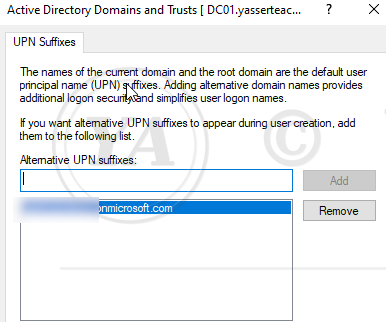
Figure 2: Alternative UPN suffix added in Active Directory Domains and Trusts on DC01.yasserteach.local.
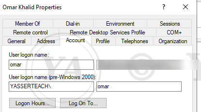
Figure 3: Omar Khalid's Account properties showing the cloud-compatible UPN suffix applied to the user logon name (domain value blurred for privacy).
8.7 Microsoft Entra Administrative Access
A dedicated Microsoft Entra administrative identity was used during the configuration of Microsoft Entra Connect, assigned the required administrative role for Hybrid Identity configuration. For security reasons, the administrator username, administrator UPN, Tenant ID, Object ID, and authentication details are intentionally excluded from the public documentation.
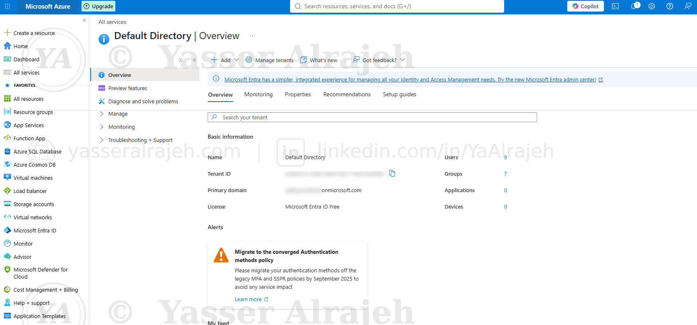
Figure 4: Microsoft Entra ID (Default Directory) overview — Tenant ID and primary domain redacted for portfolio publication.
8.8 Microsoft Entra Connect Deployment
Microsoft Entra Connect Sync was downloaded through the Microsoft Entra administration environment and installed on DC01. A Custom Installation was selected instead of Express Settings, allowing manual control over the sign-in method, forest connection, UPN configuration, OU filtering, identity matching, synchronization filtering, and optional features.
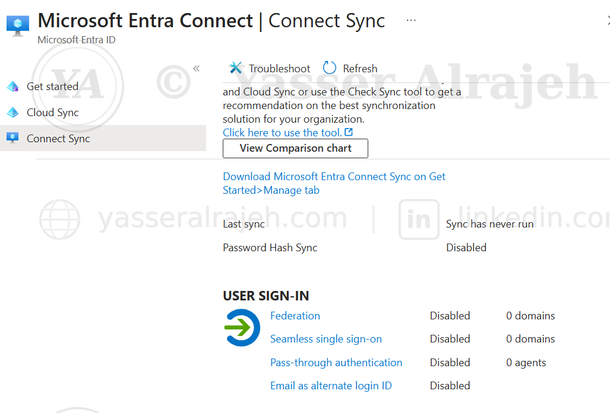
Figure 5: Microsoft Entra Connect Sync status prior to configuration — synchronization has not yet run.
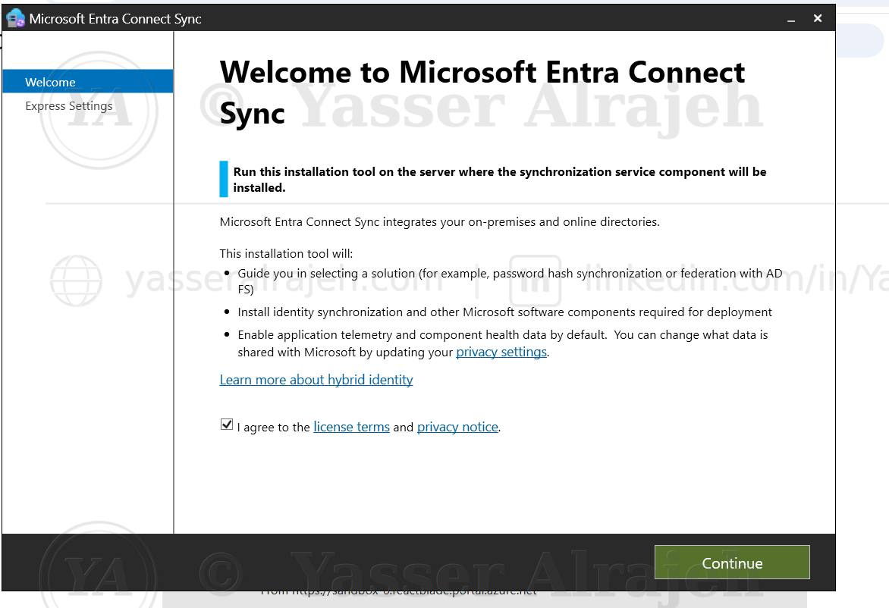
Figure 6: Microsoft Entra Connect Sync installation wizard — Welcome screen, Custom Installation path.
8.9 User Sign-In Configuration
The selected authentication method was Password Hash Synchronization:
On-Premises Active Directory
│
▼
Password Hash Synchronization
│
▼
Microsoft Entra IDSingle Sign-On was intentionally left disabled to keep the project focused specifically on directory and password synchronization.
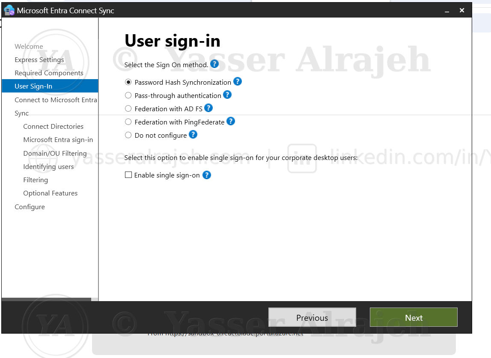
Figure 7: User Sign-In step of the installation wizard — Password Hash Synchronization selected, single sign-on disabled.
8.10 Microsoft Entra Authentication Troubleshooting
During configuration, the Microsoft Entra Connect authentication window initially failed to complete browser-based authentication. The issue was resolved by launching Microsoft Entra Connect with interactive authentication, allowing the administrative sign-in to complete successfully. This scenario was retained in the documentation because it represents a realistic Hybrid Identity deployment issue.
8.11 Connecting the Active Directory Forest
Microsoft Entra Connect detected the local Active Directory forest yasserteach.local (Directory Type: Active Directory). The forest was successfully added, and the configuration process created the necessary synchronization account and permissions required to read and synchronize directory objects.
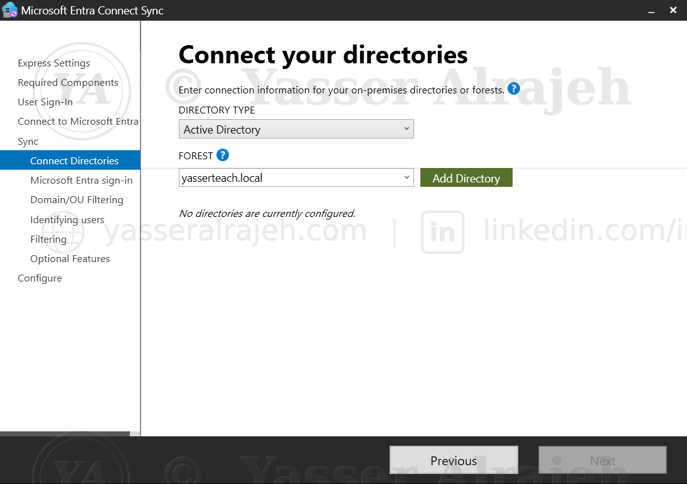
Figure 8: Connect your directories step — the yasserteach.local forest entered before being added.
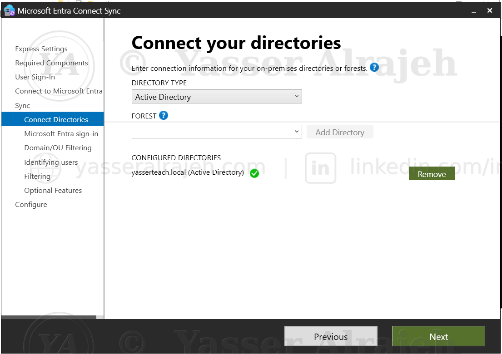
Figure 9: Connect your directories step — yasserteach.local forest successfully configured and verified.
8.12 Microsoft Entra Sign-In Configuration
Because yasserteach.local is a non-routable .local domain, it could not be matched directly to a verified internet domain, so installation continued with the appropriate configuration for the Hybrid Identity lab. The selected Microsoft Entra username attribute remained userPrincipalName.
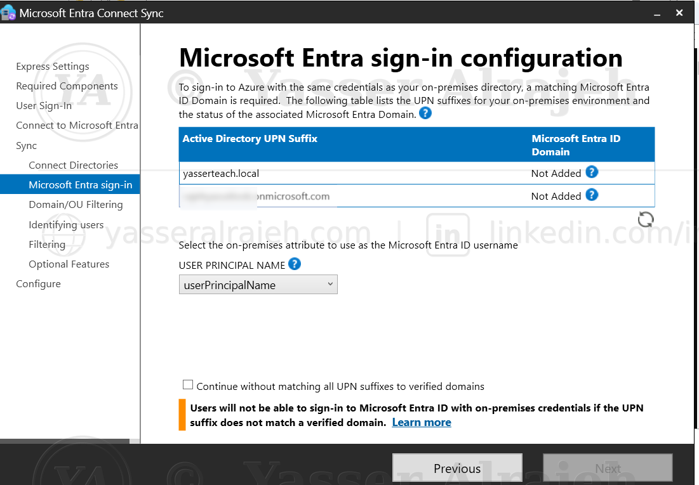
Figure 10: Microsoft Entra sign-in configuration — UPN suffix mapping table for the on-premises domain.
8.13 Domain and OU Filtering
One of the most important project controls was OU Filtering. Instead of Sync all domains and OUs, the project used Sync selected domains and OUs, selecting only the YasserTeach OU (Users and Groups) — preventing unrelated Active Directory objects from being synchronized.
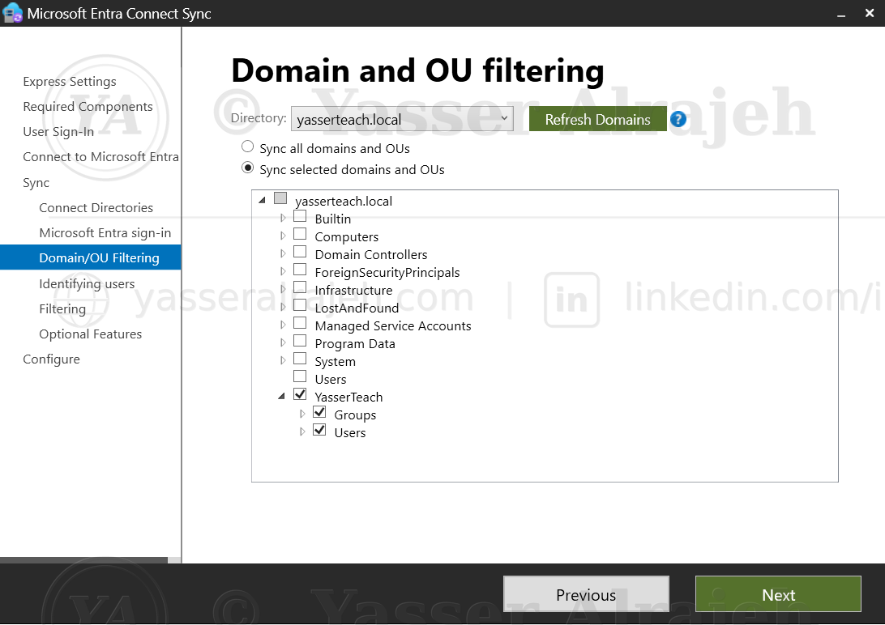
Figure 11: Domain and OU filtering — only the YasserTeach OU (Users and Groups) selected for synchronization.
8.14 User Identity Matching
The project used the recommended identity matching behavior for a single-forest environment: Users are represented only once across all directories. Microsoft Entra Connect managed the Source Anchor configuration, resulting in mS-DS-ConsistencyGuid — a stable identifier linking the on-premises identity to the corresponding Microsoft Entra identity.
8.15 User and Device Filtering
The configuration retained Synchronize all users and devices, applied only within the OUs already selected through OU Filtering. The effective synchronization scope remained YasserTeach → Users + Groups.
8.16 Optional Features
Only the functionality required for the project was enabled.
- Enabled: Password Hash Synchronization
- Disabled: Exchange Hybrid Deployment, Exchange Mail Public Folders, Microsoft Entra App and Attribute Filtering, Password Writeback, Group Writeback, Device Writeback, Directory Extension Attribute Sync
8.17 Final Microsoft Entra Connect Configuration
Before installation, Microsoft Entra Connect confirmed it would configure synchronization services, the Source Anchor, the Microsoft Entra Connector, and the yasserteach.local Active Directory Connector; enable Password Hash Synchronization; enable the Export Deletion Threshold (500 objects); and start synchronization after configuration. Staging Mode was not enabled because DC01 was the active synchronization server.
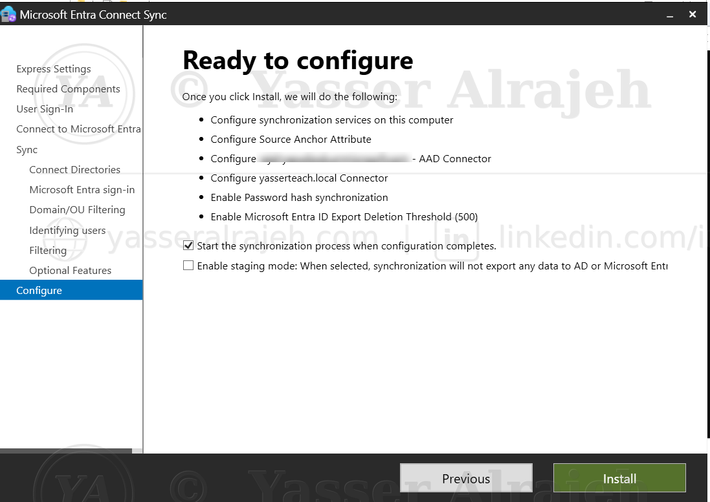
Figure 12: Ready to configure summary — final review before installing Microsoft Entra Connect Sync (tenant domain blurred for privacy).
8.18 Initial Synchronization
Microsoft Entra Connect completed configuration successfully — the wizard confirmed Configuration complete and indicated that the synchronization process had been initiated.
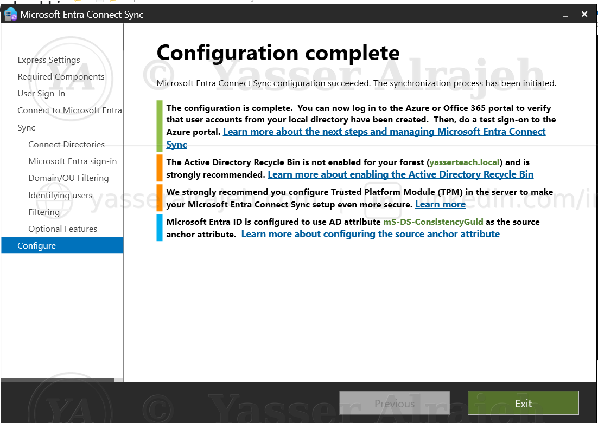
Figure 13: Configuration complete — Microsoft Entra Connect Sync installation finished and synchronization initiated.
9. Validation and Testing
9.1 User Synchronization Validation
After the initial synchronization, all three project users (Ahmed Saleh, Sara Hassan, Omar Khalid) appeared successfully in Microsoft Entra ID. Their cloud UPNs used the configured tenant domain, which has been intentionally redacted from the public documentation — e.g. ahmed@<cloud-domain>.
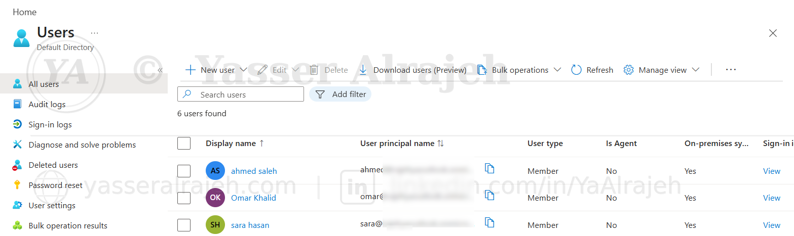
Figure 14: Microsoft Entra ID Users list confirming the three project identities were synchronized successfully.
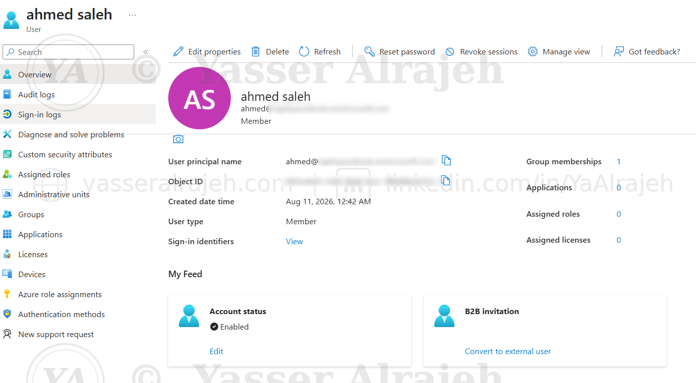
Figure 15: Ahmed Saleh's synchronized user object in Microsoft Entra ID, confirmed as an on-premises synced member account.
9.2 Group Synchronization Validation
The Cloud-Admin and Cloud-Users security groups created in Active Directory also appeared in Microsoft Entra ID as Security-type groups, confirming that Microsoft Entra Connect successfully synchronized both users and groups.
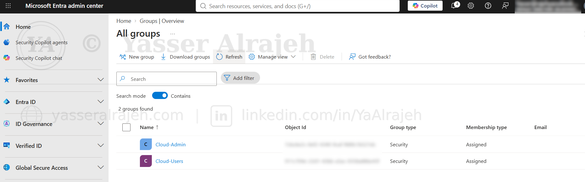
Figure 16: Microsoft Entra ID Groups list confirming Cloud-Admin and Cloud-Users were synchronized as Security groups.
9.3 Delta Synchronization Test
To validate ongoing synchronization, Ahmed Saleh was modified in the local Active Directory environment with Department = IT and Job Title = Network Engineer. A manual Delta Synchronization was then initiated using:
Start-ADSyncSyncCycle -PolicyType DeltaThe command returned Success, confirming that Microsoft Entra Connect accepted and initiated the Delta Sync cycle.
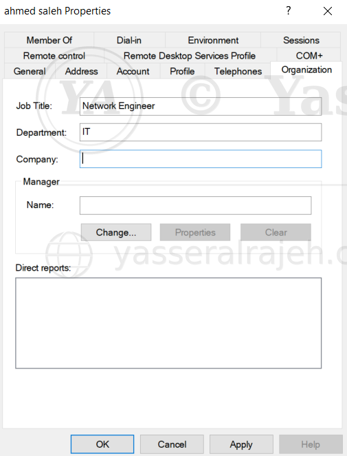
Figure 17: Ahmed Saleh's Active Directory properties updated with Job Title and Department prior to the Delta Sync.
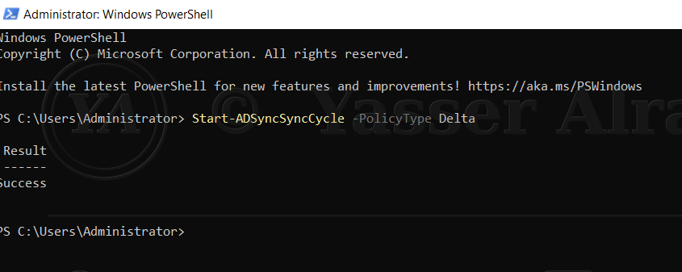
Figure 18: PowerShell Delta Synchronization cycle triggered on DC01 using Start-ADSyncSyncCycle, returning Success.
9.4 Attribute Synchronization Validation
After the Delta Sync completed, Ahmed Saleh was checked in Microsoft Entra ID and the synchronized attributes (Department: IT, Job Title: Network Engineer) appeared successfully — end-to-end proof that on-premises Active Directory changes propagate to Microsoft Entra ID.
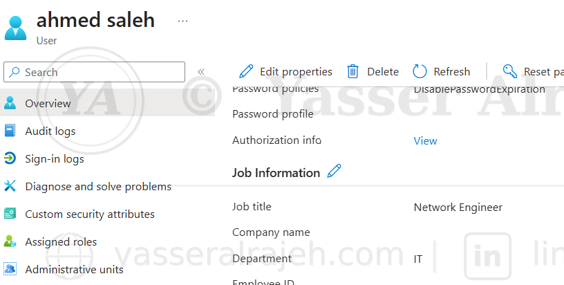
Figure 19: Ahmed Saleh's Microsoft Entra ID profile showing the Job Title and Department synchronized from Active Directory via Delta Sync.
9.5 Synchronization Flow
Active Directory (yasserteach.local)
│
▼
YasserTeach OU
├── Users
└── Groups
│
▼
OU Filtering
│
▼
Microsoft Entra Connect Sync
├── Password Hash Synchronization
├── Attribute Synchronization
└── Delta Synchronization
│
▼
Microsoft Entra ID
├── Cloud Users
└── Security Groups10. Troubleshooting Performed
10.1 VMware NAT Connectivity
The virtual network initially prevented DC01 from reaching the internet. The VMware virtual network was corrected to use NAT, the DC was assigned a compatible static IP and default gateway, and connectivity was validated using ping 8.8.8.8 and nslookup google.com.
10.2 Default Gateway Configuration
DC01 initially had a static IP but no valid Default Gateway. The networking configuration was corrected to provide internet connectivity while keeping the Domain Controller's DNS configuration appropriate for Active Directory.
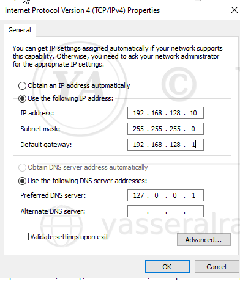
Figure 20: Corrected TCP/IPv4 configuration on DC01 — static IP, subnet mask, and default gateway set, with the DNS server pointed to the local host (127.0.0.1).
10.3 Microsoft Entra Authentication
Microsoft Entra Connect initially encountered a browser authentication failure. The authentication process was successfully completed using interactive authentication.
10.4 Non-Routable Active Directory Domain
The .local domain yasserteach.local was identified as a non-routable namespace. The Hybrid Identity configuration therefore used an alternative cloud-compatible UPN for users while retaining the internal Active Directory domain.
11. Implementation Validation and Outcomes
The completed lab was validated across deployment, authentication, connectivity, and synchronization.
| Validation Item | Status |
|---|---|
| On-premises AD to Microsoft Entra ID integration | Completed |
| Microsoft Entra Connect Sync deployment | Completed |
| Password Hash Synchronization | Completed |
| Alternative UPN configuration | Completed |
| OU Filtering | Completed |
| User synchronization | Completed |
| Security group synchronization | Completed |
| Group membership synchronization | Completed |
| Source Anchor configuration | Completed |
| Initial synchronization | Completed |
| Manual Delta Synchronization | Completed |
| Attribute synchronization (Department, Job Title) | Completed |
| End-to-end Hybrid Identity validation | Completed |
| Troubleshooting of authentication and connectivity issues | Completed |
Security Outcomes
✅ Identities are managed on-premises in Active Directory and synchronized to Microsoft Entra ID under a controlled OU boundary.
✅ Authentication uses Password Hash Synchronization rather than a broader federation trust.
✅ Only selected OUs (Users, Groups) are synchronized — the rest of the AD forest is untouched.
✅ Changes made in Active Directory are propagated to the cloud through a validated Delta Sync cycle.
✅ Tenant ID, tenant domain, administrator account, object IDs, and authentication details are excluded or redacted from the public portfolio documentation.
Final Outcome
The project successfully established a functional Microsoft Hybrid Identity architecture between the yasserteach.local Active Directory environment and Microsoft Entra ID. Microsoft Entra Connect Sync was configured with Password Hash Synchronization and OU Filtering, allowing selected users and security groups to be synchronized securely to the cloud. The final validation demonstrated that changes made to an existing user in on-premises Active Directory were successfully propagated to Microsoft Entra ID using a manual Delta Sync.
Project Status: Successfully Completed — 100%